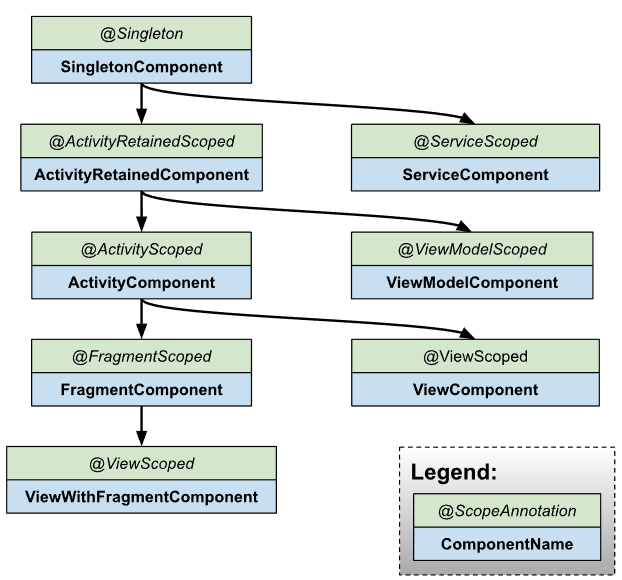

[Android] 의존성 주입(DI) - Hilt 사용법
안드로이드 의존성 주입 라이브러리들
안드로이드에서 사용하는 대표적인 의존성 주입 라이브러리는 세 가지 입니다.
KoinDagger 2Hilt
Koin은 코틀린 환경에서 사용할 수 있는 의존성 주입 라이브러리 입니다. 다른 의존성 주입 라이브러리에 비해 상대적으로 배우고 쉽습니다. 그러나 Koin은 런타임에 리플렉션을 통해 의존성을 주입해주므로 성능이 저하될 수 있습니다.
Dagger나 Hilt는 의존성 주입에 어노테이션을 사용합니다. 어노테이션은 컴파일 타임에 코드로 변환되므로 컴파일 타임은 길어질 수 있으나 런타임에 성능이 저하되지 않습니다. 따라서 큰 규모의 프로젝트에서는 Dagger나 Hilt가 권장됩니다.
설정
먼저 hilt-android-gradle-plugin 플러그인을 프로젝트 수준의 build.gradle 파일에 추가합니다.
- groovy
1 | buildscript { |
그 다음 모듈 수준의 build.gradle 파일 상단에 hilt-android-gradle-plugin 플러그인을 적용합니다.
- groovy
1 | apply plugin: 'dagger.hilt.android.plugin' |
마지막으로 다음 종속성을 추가합니다.
- groovy
1 | dependencies { |
Hilt는 자바 8를 사용하므로 자바 8 사용을 설정합니다.
- groovy
1 | android { |
사용 방법
(1) @HiltAndroidApp
Hilt를 사용하려면 Application를 정의하고 @HiltAndroidApp 어노테이션을 추가해야합니다.
- kotlin
1 |
|
@HiltAndroidApp을 추가하면 Singleton Component가 생성됩니다. Component는 스프링의 IoC Container와 유사하며, 주입할 객체를 관리하고 필요한 곳에 주입하는 역할을 합니다. Singleton Component는 앱 전체의 생명주기와 함께하며 단일 객체로 유지되는 Component입니다. Singleton Component에 설치한 의존성은 앱 어디에서든 주입받을 수 있게됩니다. 참고로 Component는 의존성을 주입해준다는 점에서 Injector라고도 불립니다.
(2) @AndroidEntryPoint
Hilt는 여러 의존성을 관리하고 적절하게 주입해줍니다. Hilt로 부터 의존성 주입을 받으려면 @AndroidEntryPoint 어노테이션을 추가해야합니다.
@AndroidEntryPoint는 다음과 같은 안드로이드 클래스에 추가할 수 있습니다.
ApplicationActivityFragmentViewServiceBroadcaseReceiver
예제를 살펴보겠습니다. YourActivity에 @AndroidEntryPoint를 추가합시다.
- kotlin
1 |
|
액티비티에 @AndroidEntryPoint를 추가하면 ActivityComponent가 생성됩니다.
참고로 생성된 Component들은 아래와 같은 계층구조를 갖습니다.

따라서 SingletonComponent의 하위에 ActivityComponent가 그래프의 형태로 생성됩니다. 또한 SingletonComponent에 설치한 모듈에 포함된 의존성은 ActivityComponent에서도 사용할 수 있습니다. (즉, 부모 Component에 설치한 의존성은 자식 Component에서 사용할 수 있습니다.)
(3) 의존성 주입
이제 ThemeManager 객체를 YourActivity에 주입하려고 합니다.
- kotlin
1 | class ThemeManager constructor( |
- kotlin
1 |
|
의존성을 주입하려면 주입할 객체를 Hilt에 등록해야합니다. 이를 위해 ThemeManager의 생성자 앞에 @Inject 어노테이션을 추가하면 됩니다. 이 객체는 Component에 설치됩니다.
- kotlin
1 | import javax.inject.Inject |
의존성을 주입받는 곳에도 @Inject 어노테이션을 추가합니다.
- kotlin
1 | import javax.inject.Inject |
이제 다음과 같이 주입된 객체에 접근할 수 있습니다.
- kotlin
1 | import javax.inject.Inject |
ViewModel 주입
Hilt는 ViewModel 주입도 지원합니다. 예를 들어 SettingsActivity에 SettingsViewModel을 주입한다고 가정합시다.
- kotlin
1 |
|
- kotlin
1 | import javax.inject.Inject |
ViewModel객체를 Hilt에 등록할 때는 @HiltViewModel과 @Inject를 사용합니다.
- kotlin
1 | import dagger.hilt.android.lifecycle.HiltViewModel |
액티비티에서는 다음과 같이 의존성을 주입받을 수 있습니다.
- kotlin
1 | import androidx.activity.viewModels |
by viewModels()를 사용하면 ViewModelProvider를 사용하지 않고도 뷰모델을 지연 생성할 수 있습니다. 다만 by viewModels()를 사용하려면 다음과 같이 Android KTX 의존성을 추가해야합니다.
- groovy
1 | dependencies { |
모듈
때로는 주입하려는 클래스의 생성자 앞에 @Inject를 붙일 수 없는 경우가 있습니다. 이러한 경우 모듈(Module)을 사용할 수 있습니다.
(1) 외부 라이브러리의 객체를 주입
외부 라이브러리에서 제공하는 클래스는 직접 코드를 수정할 수 없습니다. 따라서 필요한 생성자 앞에 @Inject를 붙일 수도 없습니다. 이러한 경우 모듈을 사용할 수 있습니다.
우선 모듈은 @Module 어노테이션을 통해 정의합니다.
- kotlin
1 |
|
그 다음은 @InstallIn()을 통해 의존성을 주입할 안드로이드 클래스를 지정합니다. @InstallIn(SingletonComponent::class)로 설정하면 SingletonComponent에 모듈을 설치하므로 앱 어디에서는 의존성을 주입받을 수 있습니다.
- kotlin
1 |
|
이제 @Provides를 붙인 provides 함수를 정의합니다. provides 함수에는 의존성을 어떻게 제공할지를 명시합니다.
- kotlin
1 |
|
(2) 인터페이스에 구현체 주입
모듈은 인터페이스에 구현체를 삽입하는 때도 유용하게 사용됩니다. 다음과 같이 SessionRepository인터페이스와 구현체 SessionRepositoryImpl클래스가 있다고 가정합시다.
- kotlin
1 | interface SessionRepository { |
- kotlin
1 | class SessionRepositoryImpl constructor( |
이제 LogInUseCase의 생성자에 SessionRepositoryImpl객체를 주입하려고 합니다.
- kotlin
1 | class LogInUseCase constructor( |
이 경우에도 모듈을 사용할 수 있습니다.
- kotlin
1 |
|
인터페이스에 구현체를 제공할 때는 @Provides 대신 @Binds를 사용하는 binds 함수를 정의합니다.
- kotlin
1 |
|
참고로 @Singleton어노테이션을 추가하면 객체를 싱글톤으로 유지할 수 있습니다.
- kotlin
1 |
|
(3) UseCase 객체 주입
Clean Architecture에서는 UseCase를 ViewModel에 주입합니다.
- kotlin
1 |
|
UseCase는 @Inject 어노테이션으로 컴포넌트에 등록할 수 있습니다.
- kotlin
1 | class LogoutUseCase constructor( |
반면 @Inject 어노테이션을 사용하지않고 직접 모듈을 정의하여 컴포넌트에 등록할 수도 있습니다.
- kotlin
1 | class ChangePasswordUseCase constructor( |
- kotlin
1 |
|
모듈을 ViewModelComponent에 설치했으므로 ChangePasswordUseCase객체는 ViewModel에서만 주입받을 수 있게됩니다.